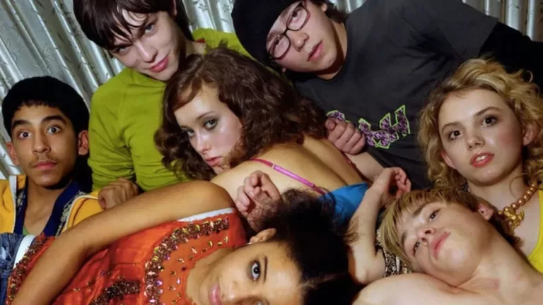
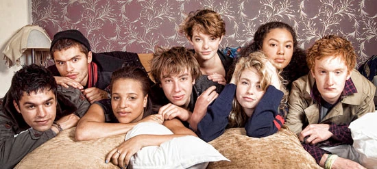

Temporadas y generaciones de la serie
La serie se divide en varias temporadas y generaciones de personajes. Cada generación presenta un nuevo grupo de amigos.
Generaciones de la serie
- Primera generación (Temporadas 1-2): La primera generación sigue a un grupo de adolescentes liderados por Tony Stonem. Esta generación se centra en sus vidas, relaciones y desafíos personales. Incluye personajes como Sid, Cassie y Michelle.

- Segunda generación (Temporadas 3-4): La segunda generación introduce a un nuevo grupo de personajes, aunque algunos de la primera generación siguen apareciendo. Esta generación se enfoca en personajes como Effy Stonem, Freddie McClair y Cook.
- Tercera generación (Temporadas 5-6): La tercera generación presenta a un nuevo elenco de personajes, con algunos de la segunda generación haciendo apariciones. Esta generación sigue a personajes como Franky Fitzgerald, Matty Levan y Grace Blood.

Cada generación de Skins tiene su propio estilo y enfoque, pero todas comparten la misma esencia de explorar la vida adolescente de manera honesta y sin censura. La serie es conocida por su capacidad para abordar temas difíciles y controvertidos, lo que la ha convertido en un referente para muchos jóvenes espectadores.
Caracteristicas de cada generacion
- Nuevos personajes principales
- Nuevas relaciones entre los protagonistas
- Diferentes conflictos personales
- Cambios en el grupo de amigos
Este formato permitió que la serie se renovara constantemente y siguiera contando historias distintas sobre la adolescencia.